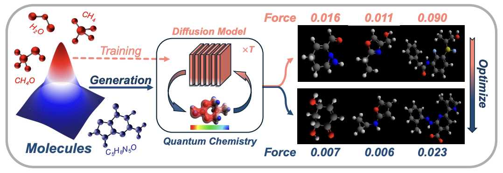
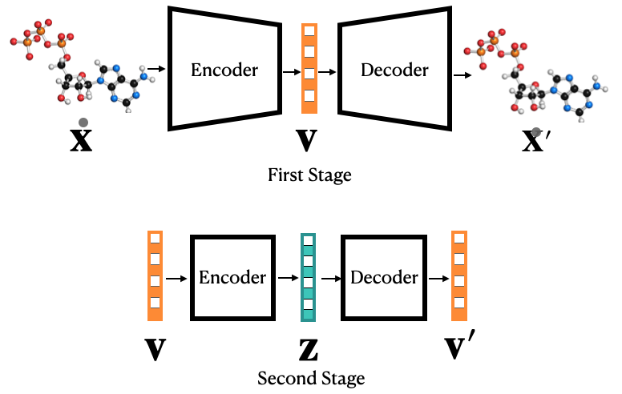
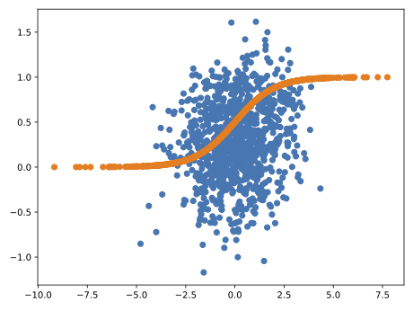
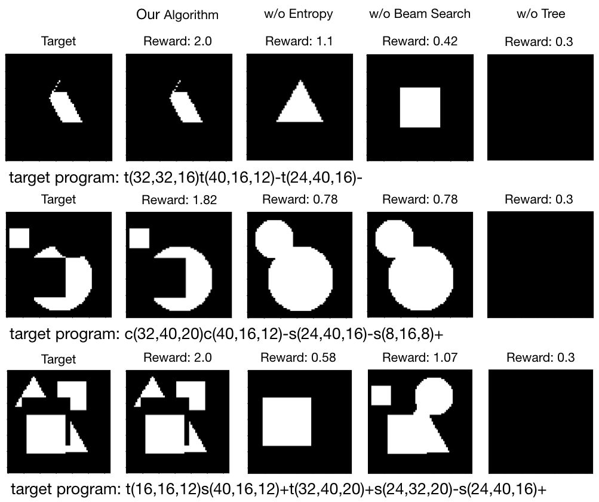
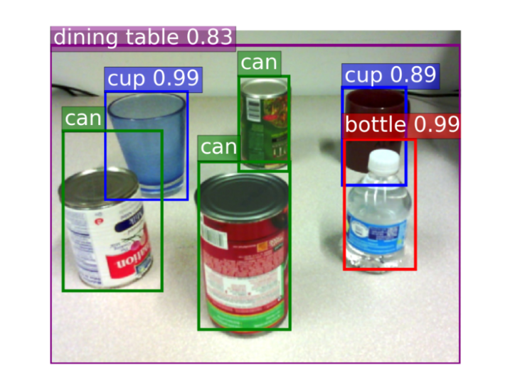
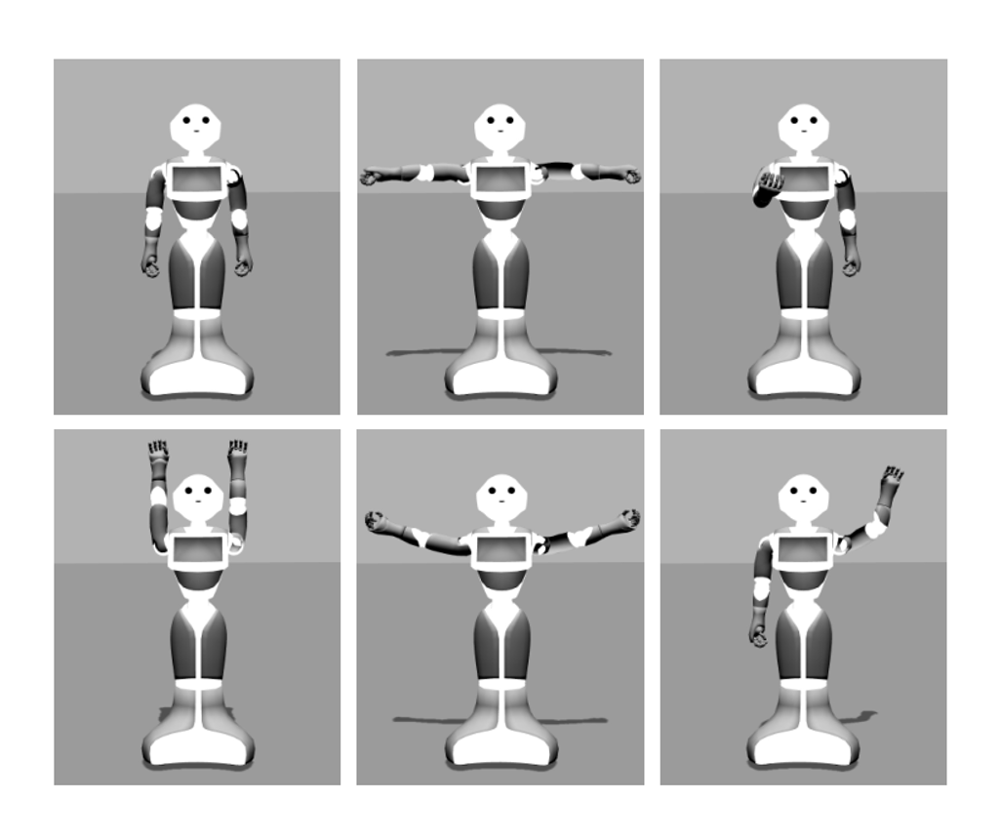
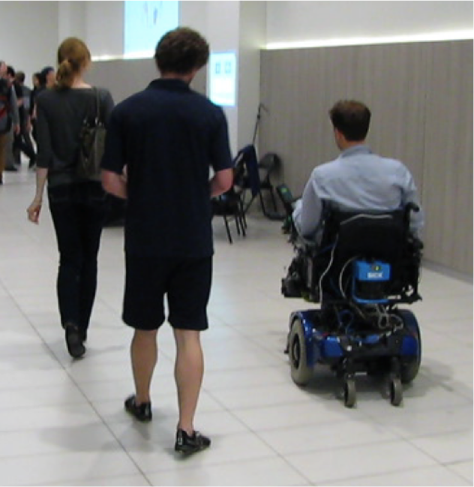

|
Research
My current focus is on generative models – their theoretical foundations and applications in structured data generation, such as molecule generation,
program synthesis, image captioning, text generation, and machine translation.
|
|

|
Chemistry-Inspired Diffusion with Non-Differentiable Guidance
Yuchen Shen*,
Chenhao Zhang*,
Sijie Fu*,
Chenghui Zhou,
Newell Washburn
Barnabás Póczos,
International Conference on Learning Representations (ICLR), 2025
|
|
|
Objective-Agnostic Enhancement of Molecule Properites via Multi-Stage VAE
Chenghui Zhou,
Barnabás Póczos
Submitted to ICML 2024
We propose a novel approach that attenuates the limitations of acquiring large labeled datasets by leveraging domain
knowledge from quantum chemistry as a non-differentiable oracle to guide an unconditional diffusion model. Instead of relying on neural networks, the oracle provides accurate guidance in the form of estimated gradients, allowing the diffusion
process to sample from a conditional distribution specified by quantum chemistry.
We show that this results in more precise conditional generation of novel and
stable molecular structures
|
|

|
Improving Molecule Properties Through 2-Stage VAE
Chenghui Zhou,
Barnabás Póczos
Machine Learning for Structural Biology Workshop, NeurIPS, 2022
We improve the similarity of the data generated via VAE and the testing dataset by
improving manifold recovery via a 2-stage VAE where the second stage VAE is trained on the latent space
of the first one. We show experimentally that our approach is able to improve the property statistics
significantly from a pre-existing method using the ChEMBL dataset and a polymer datasets.
|
|

|
Variational Autoencoders in the Presence of Low-Dimensional Dta: Landscape and Implicit Bias
Chenghui Zhou*,
Frederic Koehler*,
Viraj Mehta*,
Andrej Risteski
International Conference on Learning Representations (ICLR), 2022
Our paper studies the limitation of VAE learning low dimensional manifold embedded in a high
dimensional space. We show that for linear encoders/decoders, the VAE training does recover a generator
with support equal to the ground truth manifold due to an implicit bias of gradient descent rather than
merely the VAE loss itself. In the nonlinear case, VAE training frequently learns a higher-dimensional
manifold which is a superset of the ground truth manifold.
code
|
|

|
Unsupervised Program Synthesis for Images by Sampling without Replacement
Chenghui Zhou,
Chun-Liang Li,
Barnabás Póczos
Conference on Uncertainty in Artificial Intelligence (UAI), 2021
We present the first unsupervised algorithm capable of parsing constructive solid geometry (CSG) images
into context-free grammar (CFG) without pretraining via a non-differentiable renderer. We combine three
key ingredients—(i) a grammar-encoded tree LSTM ensuring program validity (ii) entropy regularization
and (iii) sampling without replacement from the CFG syntax tree. Empirically, it generalizes
better than supervised methods on a synthetic 2D CSG dataset. On a 2D computer aided design (CAD)
dataset, our approach significantly outperforms the supervised pretrained model and is competitive to
the refined model.
code
|
|

|
Towards a Robust Interactive and Learning Social Robot
Michiel de Jong,
Kevin Zhang,
Aaron M. Roth,
Travers Rhodes,
Robin Schmucker,
Chenghui Zhou,
Sofia Ferreira,
João Cartucho,
Manuela Veloso
Conference on Autonomous Agents and Multiagent Systems (AAMAS), 2018
We augment Pepper's perception by integrating state-of-the-art vision and speech recognition systems.
As we recognize limitations of the individual perceptual modalities, we introduce a
multi-modality approach to increase the robustness of human social
interaction with the robot. We combine vision, gesture, speech, and
input from an onboard tablet, a remote mobile phone, and external
microphones.
|
|

|
Multimodal Movement Activity Recognition Using a Robot’s Proprioceptive Sensors
Robin Schmucker,
Chenghui Zhou,
Manuela Veloso
RoboCup 2018: Robot World Cup XXII, 2018
By introducing Human Activity Recognition approaches to the robotics domain,
we aim at creating agents that can detect their own body’s activities.
Our activity recognition pipeline can detect unexpected behavior and can
be used to extend Pepper’s inbuilt capabilities.
|
|

|
Learning Time Series Models for Pedestrian Motion Prediction
Chenghui Zhou,
Borja Balle,
Joelle Pineau
International Conference on Robotics and Automation (ICRA), 2016
We consider motion models cast in the Predictive Linear Gaussian (PLG) model, and propose two learning
approaches for this framework: one based on the method of moments and the other on a least-squares
criteria. We evaluate the approaches on several synthetic datasets, and deploy the system on a
wheelchair robot, to improve its ability to follow a walking companion.
code
|
Template of this page: link.
|
|